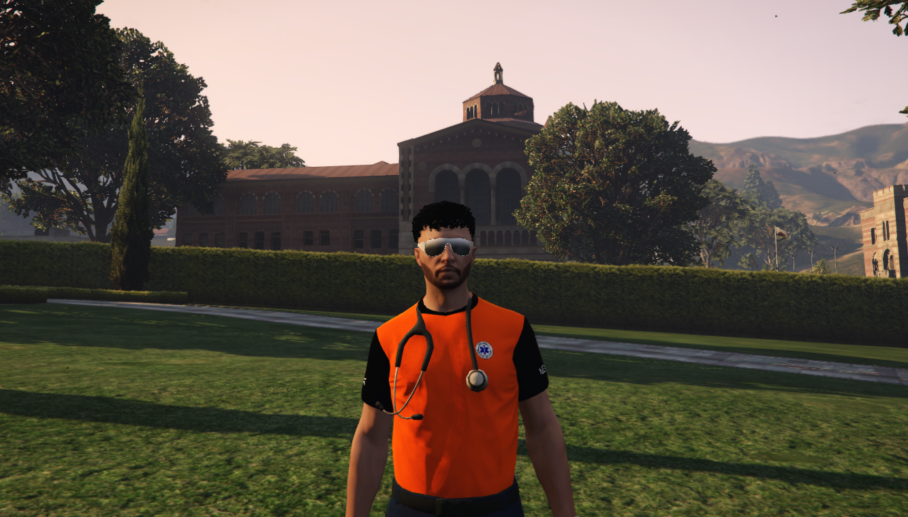

Conducerea Spitalului
O echipă dedicată sănătății
Conducerea Serviciul de Ambulanță Județeană Xenon este formată din profesioniști cu o vastă experiență în domeniul medical și managerial, dedicați misiunii noastre de a oferi servicii de calitate pacienților noștri.

Dr. Popică Cămătaru
Director Administrativ
Asigură buna funcționare administrativă, gestionează logistica și resursele non-medicale ale spitalului.
Dr. Tudor Moldovan
Director General
Conduce spitalul, gestionează strategia, resursele și dezvoltarea instituției pentru servicii medicale eficiente.
Dr. Victoraș Moldovan
Director Medical
Coordonează activitatea medicală, asigurând respectarea protocoalelor și îmbunătățirea calității îngrijirii pacienților.
Organigrama Spitalului Xenon
Contactați echipa noastră
Dacă aveți întrebări sau doriți să aflați mai multe informații, ne puteți găsi vizitând sediul nostru!